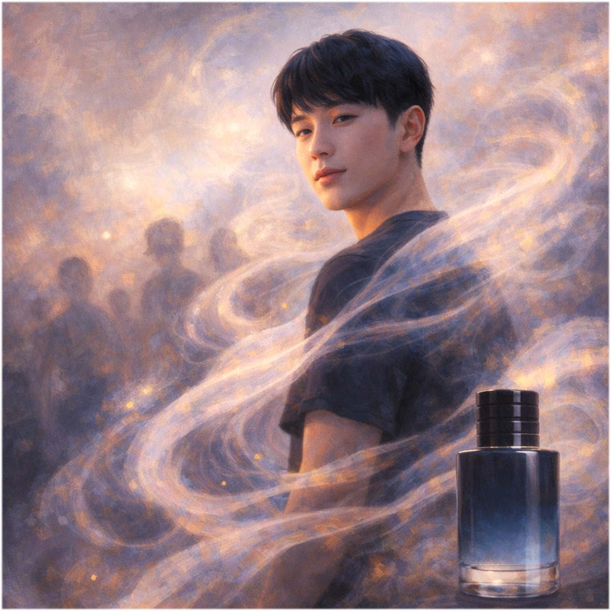

Illustration

Gender
♂️ - 男生
Goal
第一個發表三篇相同純色論文，成為兩性市場的最後 Winner
Ability
# 戀愛家教 -
將四張手牌給一位♂，獲取他一篇已發表論文作為手牌。
# 渣男香 曠野之心 -
當一位♀發表你傳出的純色論文，棄掉她一張手牌。
## 變異的螃蟹 -
你傳出的數位相機論文，在即將發表時，可以替換成你手牌的顏色。
Trivia
他超喜歡稱他人紀崴，為什麼呢？因為他自己就是紀崴，他在尋找認同。
那麼到底誰是紀崴？
紀崴：「我一定要成為這個時代、兩性市場的最後 Winner，I am a King！」
「戀愛家教」紀崴，一位苦尋愛情的男子
三間婚友社會員 10 多萬、戀愛家教課程 3 萬多。
戀愛家教課程，視訊 2 個小時 2 萬塊。
2 萬塊學到什麼東西？
「怎麼跟女生聊賴，女生回多少，我們就回多少，不要回太多」
— by 欸的窩的
值得！相當的值得！
紀崴前前後後花費將近 20 萬，就是為了交到一個女友，結束母胎單身 24 年！
「渣男香 曠野之心」約會的秘密武器
「迪奧的曠野之心，也就是眾多女生口中所謂的渣男香的香水」
— by 紀崴
約會中紀崴總喜歡跟女孩聊香水
「妳有噴香水嗎? 妳噴什麼牌子的?」
不等對方回答，他自己接上：
「我噴的是迪奧的曠野之心」
女生：「喔……」
「變異的螃蟹」一般的巨蟹可能比較不會溝通
而紀崴自稱為變異的螃蟹。
他會跟另一半分享他所有的情緒，絕對不會悶著不說：
「那妳今天遇到我，那妳算是遇到一隻比較變異的螃蟹」
「所以今天算是妳比較幸運，遇到我這隻變異的螃蟹 XDD」
「感覺好像我是變異的螃蟹比較受妳喜歡，對吧？」
女生：「……」
#Badass #Variant
Relationship